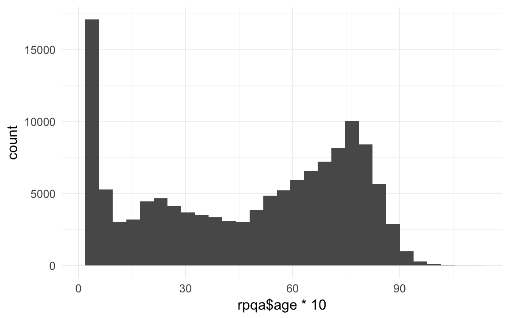
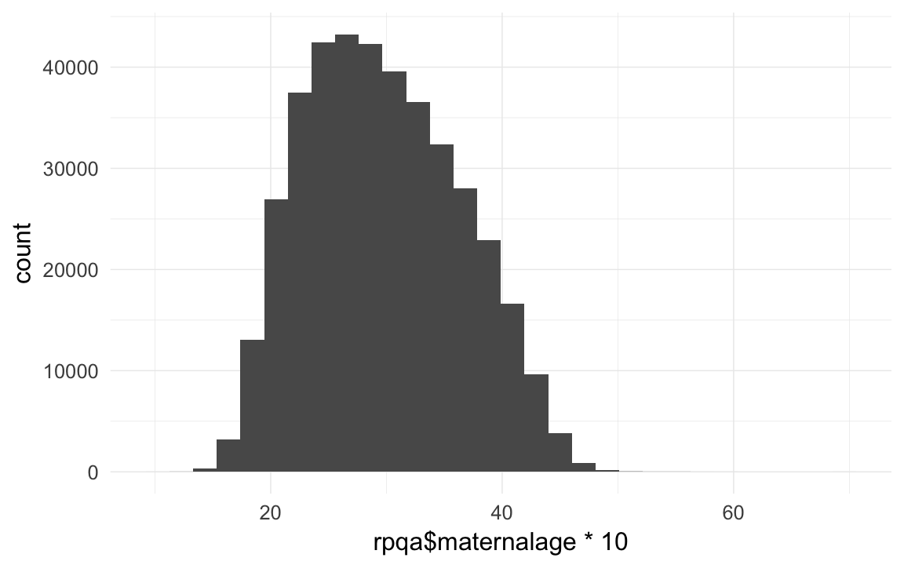
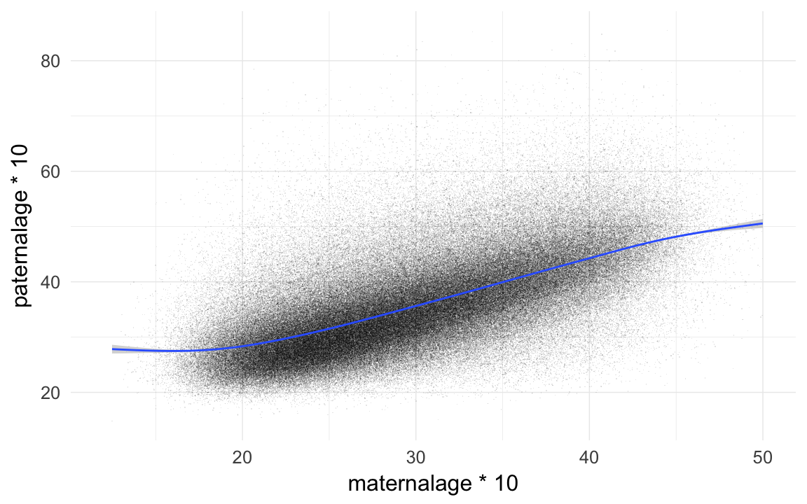
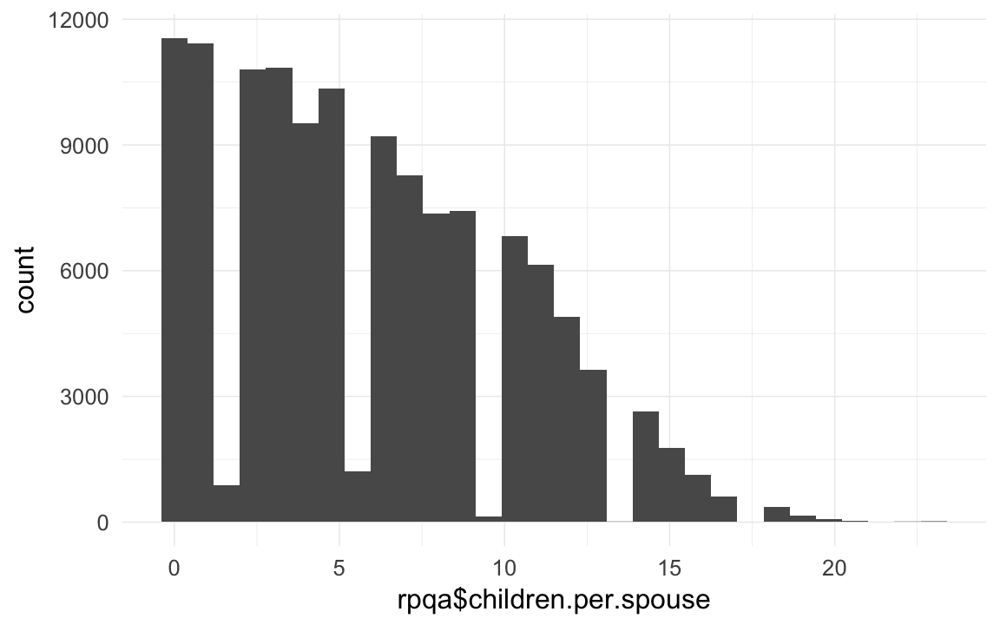

RPQA Data wrangling
description of data
Data from the « Registre de la Population du Québec Ancien » of the Programme de Recherche en Démographie Historique, Demography Department, Université de Montréal
January 2012
The data is «Family reconstitution data» based on the systematic transcription of names, place and dates of catholic Baptisms, Marriages and Burials registered in Quebec for the period 1621-1799. Data also include death information of the 1800-1850 for people born before 1750. There are two distinct numerotations: one for couples, one for individuals.
The data is presented in two files:
1- A couple’s file, giving for each couple
- its id number and the id numbers of the spouses
- a date followed by a one digit code (1= marriage date; 2 = marriage contract date, used to replace missing marriage date, contracts being normally signed a few days before the actual marriage; 4 = first mention of the couple in the documents (baptism of a child, remarriage of a spouse, etc.); the couple can have married outside Quebec and migrated in, or it can be a couple formed in Quebec for which the marriage was lost and no contract found to replace)
- a place: parish were the marriage was celebrated, “000” if a marriage contract (meaning somewhere in Quebec), or a place outside Quebec or no place at all)
2- A file of individuals, giving for each:
- Id number and id numbers of parents
- A code of one’s ethnic origin (for certain immigrants: 911 = German, 795 = born in USA, 901 = British, 794 = “English” (American or British)
- A flag identifying Indians
- A flag identifying Immigrants (= anyone born outside Quebec; mostly born in France but could be born out West (fur trading country) from Quebec parents…
- A flag identifying those having died outside Quebec (out-migrants)
- Date of birth, followed by a one digit code (1 = date of birth; 2 = date of baptism, can be used as equivalent to date of birth), = 3 or 4: child died soon after birth, before having received formal baptism; = 5 or 6: approximate year of birth, usually from an age declaration; = 7 missing info
- Place of birth: usually parish of baptism
- Date of death, followed by a one digit code (1 = date of death; 2 = date of burial; 3 or 4 = date found from another source; 5 = missing info)
- Place of death: normally: parish of burial
- Flag identifying among those who married those who could sign (= 1) and those who could not (= 2)
For all place codes: numbers from 0000 to 6909 correspond to Quebec parishes. 3901 = Montreal; 4501 = Quebec city; 6001 = Trois-Rivieres. They are the only urban areas, with Trois-Rivieres being more a village than a town. The Administration and the merchants and such lived either in Montreal or Quebec. All other parishes are rural. 5 digit codes (10011…) correspond to places in France. 7801 to 789 to areas out West (“Pays-d’en-Haut”, outposts for military reasons and fur trade).
Loading details
source("0__helpers.R")
opts_chunk$set(cache=FALSE,tidy=FALSE,autodep=TRUE,fig.width=12,fig.height=7.5)
# rpqa_fam
# gebkk 1, 2 gebfk, gebmk. 1 datum genau bekannt, 2 = 15. juni eines jahrs, jahrgenau
# rpqa_unions # alle ehen
# unbekanntes schicksal = Nbirth - infantD/1y - childD/1-15y - adultD/15+
#eheF == 1 und eheM == 1 erstehen
# auswahl_id_f == alle ehen der frau, vv
# ehebekannt: kennen anfang und ende der ehe, bei ehebekannt==1 mehr geburten pro ehe
# 1670-1750Transforming data
rpqa.individuals = foreign::read.dta("data/RPQA_29Oct2014/RPQA-family.dta")
rpqa.unions = foreign::read.dta("data/RPQA_29Oct2014/RPQA-union4.dta")
rpqa.unions = rpqa.unions %>% select(id, id_m, id_f, dat, dateMannee, dateMmois, dateMjour, qualiteDateM, codeLieuM, ehebekannt)
rpqa.unions$idParents = str_c(rpqa.unions$id_m, '_', rpqa.unions$id_f)
rpqa.unions$idParents[which(rpqa.unions$idParents=="NA_NA")] = NA
rpqa.individuals$idParents = str_c(rpqa.individuals$idPere, '_', rpqa.individuals$idMere)
rpqa.individuals$idParents[which(rpqa.individuals$idParents=="NA_NA")] = NA
rpqa = rpqa.individuals
rpqa$immigrant = factor(rpqa$immigrant,levels=c(0,1),labels=c('NO',''))
rpqa$emigrant = factor(rpqa$emigrant,levels=c(0,1),labels=c('NO',''))
rpqa$amerindien = factor(rpqa$amerindien,levels=c(0,1),labels=c('NO',''))
rpqa$sexe = car::Recode(rpqa$sexe,"'M'='m';'x'=NA")
rpqa$male = ifelse(rpqa$sexe == 'm',1,0)
rpqa$bdate = as.Date(rpqa$gebk)
rpqa$byear = year(rpqa$bdate)
rpqa$ddate = as.Date(rpqa$todk)
rpqa$dyear = year(rpqa$ddate)
rpqa$bdate.Father = as.Date(rpqa$gebm)
rpqa$byear.Father = year(rpqa$bdate.Father)
rpqa$ddate.Father = as.Date(rpqa$todm)
rpqa$dyear.Father = year(rpqa$ddate.Father)
rpqa$bdate.Mother = as.Date(rpqa$gebf)
rpqa$byear.Mother = year(rpqa$bdate.Mother)
rpqa$ddate.Mother = as.Date(rpqa$todf)
rpqa$dyear.Mother = year(rpqa$ddate.Mother)
rpqa$age.days = as.numeric(rpqa$ddate - rpqa$bdate)
rpqa$age.days = ifelse(rpqa$age.days < 0, 0, rpqa$age.days)
# head(data.frame(as.numeric(rpqa$ddate - rpqa$bdate)/365, rpqa$ddate, rpqa$bdate))
rpqa$age.days.Father = as.numeric(rpqa$ddate.Father - rpqa$bdate.Father)
rpqa$age.days.Mother = as.numeric(rpqa$ddate.Mother - rpqa$bdate.Mother)
rpqa$age = rpqa$age.days / 365/10
qplot(rpqa$age * 10)## `stat_bin()` using `bins = 30`. Pick better value with `binwidth`.qplot(rpqa$age * 10) + xlim(1,NA)## `stat_bin()` using `bins = 30`. Pick better value with `binwidth`.
# qplot(rpqa.individuals$age.days)
rpqa$paternalage = as.numeric(rpqa$bdate - rpqa$bdate.Father)/365/10
qplot(rpqa$paternalage *10)## `stat_bin()` using `bins = 30`. Pick better value with `binwidth`.
head(sort(rpqa$paternalage *10),20)## [1] 14.84 15.05 15.47 15.90 15.92 15.92 16.01 16.01 16.13 16.18 16.30
## [12] 16.33 16.35 16.45 16.45 16.52 16.57 16.60 16.60 16.61tail(sort(rpqa$paternalage *10),20)## [1] 78.92 79.98 80.00 80.00 80.76 80.87 81.08 81.18 81.20 81.76 81.91
## [12] 81.99 82.00 82.69 83.04 83.43 83.46 84.79 85.20 85.44rpqa$maternalage = as.numeric(rpqa$bdate - rpqa$bdate.Mother)/365/10
qplot(rpqa$maternalage *10)## `stat_bin()` using `bins = 30`. Pick better value with `binwidth`.
table(rpqa$age.Mother < (rpqa$maternalage - 0.1)) # zombie moms## < table of extent 0 >table(rpqa$age.Father < (rpqa$paternalage - 0.1)) # zombie dads## < table of extent 0 >head(sort(rpqa$maternalage *10),20) # 10y old may be possible## [1] 9.953 12.008 12.482 13.008 13.049 13.140 13.156 13.238 13.247 13.247
## [11] 13.299 13.337 13.381 13.405 13.408 13.441 13.458 13.510 13.559 13.581tail(sort(rpqa$maternalage *10),40) # but 69y old. something wrong with that.## [1] 51.01 51.03 51.04 51.05 51.09 51.16 51.24 51.40 51.56 51.62 51.63
## [12] 51.72 51.72 51.92 52.03 52.12 52.12 52.16 52.35 52.35 52.38 52.49
## [23] 52.85 52.92 53.03 53.23 53.60 54.35 54.73 54.85 54.90 55.03 55.04
## [34] 55.68 55.93 56.04 56.70 57.58 59.60 69.27qplot(maternalage*10,paternalage*10,data=rpqa,geom="jitter",alpha=I(0.1),shape=I(".")) + xlim(12,50) + geom_smooth()## `geom_smooth()` using method = 'gam'
cor.test(rpqa$maternalage,rpqa$paternalage)##
## Pearson's product-moment correlation
##
## data: rpqa$maternalage and rpqa$paternalage
## t = 510, df = 390000, p-value <2e-16
## alternative hypothesis: true correlation is not equal to 0
## 95 percent confidence interval:
## 0.6309 0.6346
## sample estimates:
## cor
## 0.6328xtabs(~ is.na(idMere) + is.na(idPere), data = rpqa.individuals)## is.na(idPere)
## is.na(idMere) FALSE TRUE
## FALSE 427016 509
## TRUE 265 31801# rpqa = merge(rpqa, spouses, by.x = "idIndividu",by.y="id", all.x =T)count kids and spouses
count_and_merge = function(df, what, wt_var) {
counted.dad = dcast(data= df[,c('idPere',wt_var)],formula = idPere ~ .,fun.aggregate = sum, na.rm=T,value.var = wt_var)
counted.mom = dcast(data= df[,c('idMere',wt_var)],formula = idMere ~ .,fun.aggregate = sum, na.rm=T, value.var = wt_var)
names(counted.dad) = names(counted.mom) = c('idIndividu',what)
counted = rbind(counted.dad,counted.mom)
df = merge(df,counted,by='idIndividu',all.x=T)
df[,what] = car::Recode(df[,what],'NA=0')
df
}
rpqa.unions = rpqa.unions[order(rpqa.unions$id_m,rpqa.unions$dat),]
rpqa.unions$marriage.order.Father = ave(rep(NA, nrow(rpqa.unions)), rpqa.unions$id_m, FUN = seq_along)
rpqa.unions = rpqa.unions[order(rpqa.unions$id_f,rpqa.unions$dat),]
rpqa.unions$marriage.order.Mother = ave(rep(NA, nrow(rpqa.unions)), rpqa.unions$id_f, FUN = seq_along)
rpqa = merge(rpqa, rpqa.unions, by="idParents",all.x=T, suffixes = c("", ".Parents"))
rpqa$ehebekannt = ifelse(is.na(rpqa$ehebekannt), 0, 1)
rpqa$first.marriage = (rpqa$marriage.order.Mother + rpqa$marriage.order.Father) == 2
table(rpqa$first.marriage,exclude=NULL)##
## FALSE TRUE <NA>
## 63206 350838 45547count_spouses = function(df, df2, what, wt_var) {
counted.husband = dcast(data= df2[,c('id_m',wt_var)],formula = id_m ~ .,fun.aggregate = sum, na.rm=T, value.var = wt_var)
counted.wive = dcast(data= df2[,c('id_f',wt_var)],formula = id_f ~ .,fun.aggregate = sum, na.rm=T, value.var = wt_var)
names(counted.husband) = names(counted.wive) = c('idIndividu',what)
counted = rbind(counted.husband,counted.wive)
df = merge(df,counted,by='idIndividu',all.x=T)
df[,what] = car::Recode(df[,what],'NA=0')
df
}
rpqa$born = 1; rpqa.unions$born = 1
rpqa = count_spouses(rpqa,rpqa.unions, 'spouses', "born")
rpqa$survive1d = ifelse(rpqa$age.days > 1, 1, 0)
rpqa$survive1m = ifelse(rpqa$age.days > 28, 1, 0)
rpqa$dead1d = ifelse(rpqa$age.days <= 1, 1, 0)
rpqa$dead1m = ifelse(rpqa$age.days > 28, 0, 1)
rpqa$dead1y = ifelse(rpqa$age > 0.1, 0, 1)
rpqa$dead5y = ifelse(rpqa$age > 0.5, 0, 1)
rpqa$deadR = ifelse(rpqa$age > 1.5, 0, 1)
rpqa$survive5y = ifelse(rpqa$age > 0.5, 1, 0)
rpqa$survive1y = ifelse(rpqa$age > 0.1, 1, 0)
rpqa$surviveR = ifelse(rpqa$age > 1.5, 1, 0)
# rpqa$survive1m = car::Recode(rpqa$survive1m, 'NA=0')
table(rpqa$survive1m,exclude=NULL)##
## 0 1 <NA>
## 41499 198139 219953rpqa = count_and_merge(rpqa, 'children', wt_var = "born")
rpqa$children.per.spouse = rpqa$children/rpqa$spouses
rpqa$children.per.spouse[which(rpqa$spouses==0)] = NA
qplot(rpqa$children.per.spouse)## `stat_bin()` using `bins = 30`. Pick better value with `binwidth`.
# well we know that people who reproduced or married usually made 15
changeNAto1 = function(x) { colwise(function(x) { ifelse(is.na(x), 1, x)})(x) }
rpqa[which(rpqa$children>0 | rpqa$spouses>0), c('surviveR', 'survive1y', 'survive1m', 'survive1d')] = changeNAto1(rpqa[which(rpqa$children>0 | rpqa$spouses>0), c('surviveR', 'survive1y', 'survive1m', 'survive1d')])
rpqa = count_and_merge(rpqa, 'children.dead1d', wt_var = 'dead1d')
rpqa$children.surviving1d = rpqa$children - rpqa$children.dead1d
rpqa = count_and_merge(rpqa, 'children.dead1m', wt_var = 'dead1m')
rpqa$children.surviving1m = rpqa$children - rpqa$children.dead1m
rpqa = count_and_merge(rpqa, 'children.dead1y', wt_var = 'dead1y')
rpqa$children.surviving1y = rpqa$children - rpqa$children.dead1y
# xtabs(~ rpqa$children.dead1y + rpqa$NinfantD, exclude = NULL, na.action = na.pass)
rpqa = count_and_merge(rpqa, 'children.dead5y', wt_var = 'dead5y')
rpqa$children.surviving5y = rpqa$children - rpqa$children.dead5y
rpqa = count_and_merge(rpqa, 'children.deadR', wt_var = 'deadR')
rpqa$children.survivingR = rpqa$children - rpqa$children.deadR
changeNAto0 = function(x) { ifelse(is.na(x), 0, x) }
rpqa = count_and_merge(rpqa, 'children.spouses', wt_var = 'spouses')
rpqa = count_and_merge(rpqa, 'grandchildren.per.spouse', wt_var = 'children.per.spouse')
rpqa = count_and_merge(rpqa, 'grandchildren',wt_var='children')
rpqa = count_and_merge(rpqa, 'grandchildren.surviving1d', wt_var = 'children.surviving1d')
rpqa = count_and_merge(rpqa, 'grandchildren.surviving1m', wt_var = 'children.surviving1m')
rpqa = count_and_merge(rpqa, 'grandchildren.surviving1y', wt_var = 'children.surviving1y')
rpqa = count_and_merge(rpqa, 'grandchildren.surviving5y', wt_var = 'children.surviving5y')
rpqa = count_and_merge(rpqa, 'grandchildren.survivingR', wt_var = 'children.survivingR')
rpqa = count_and_merge(rpqa, 'grandchildren.dead1m', wt_var = 'children.dead1m')
xtabs(~ (grandchildren>0) +(children>0) + (spouses>0) + surviveR,data=rpqa,exclude=NULL, na.action= na.pass)## , , spouses > 0 = FALSE, surviveR = 0
##
## children > 0
## grandchildren > 0 FALSE TRUE
## FALSE 137531 0
## TRUE 0 0
##
## , , spouses > 0 = TRUE, surviveR = 0
##
## children > 0
## grandchildren > 0 FALSE TRUE
## FALSE 3 2
## TRUE 0 0
##
## , , spouses > 0 = FALSE, surviveR = 1
##
## children > 0
## grandchildren > 0 FALSE TRUE
## FALSE 17753 4233
## TRUE 0 16266
##
## , , spouses > 0 = TRUE, surviveR = 1
##
## children > 0
## grandchildren > 0 FALSE TRUE
## FALSE 11499 58260
## TRUE 0 57547
##
## , , spouses > 0 = FALSE, surviveR = NA
##
## children > 0
## grandchildren > 0 FALSE TRUE
## FALSE 156497 0
## TRUE 0 0
##
## , , spouses > 0 = TRUE, surviveR = NA
##
## children > 0
## grandchildren > 0 FALSE TRUE
## FALSE 0 0
## TRUE 0 0counted.parents = dcast(data= rpqa[,c('idParents',"born")],formula = idParents ~ .,fun.aggregate = sum, na.rm=T, value.var = "born")
names(counted.parents) = c('idParents',"children")
rpqa.unions = merge(rpqa.unions, counted.parents,by="idParents",all.x=T) # find childless marriages
table(rpqa.unions$children,exclude=NULL)##
## 1 2 3 4 5 6 7 8 9 10 11 12 13 14 15
## 7252 6086 5806 5378 5093 4738 4518 4310 4193 3999 3524 2818 2076 1493 990
## 16 17 18 19 20 21 22 23 <NA>
## 623 342 205 90 45 16 4 6 9535rpqa.unions = rpqa.unions[which(rpqa.unions$children > 0), ]
rpqa.unions = rpqa.unions[order(rpqa.unions$id_m,rpqa.unions$dat),]
rpqa.unions$fertile.marriage.order.Father = ave(rep(NA, nrow(rpqa.unions)), rpqa.unions$id_m, FUN = seq_along)
rpqa.unions = rpqa.unions[order(rpqa.unions$id_f,rpqa.unions$dat),]
rpqa.unions$fertile.marriage.order.Mother = ave(rep(NA, nrow(rpqa.unions)), rpqa.unions$id_f, FUN = seq_along)
rpqa = merge(rpqa, rpqa.unions[,c('idParents','fertile.marriage.order.Mother','fertile.marriage.order.Father'),],by="idParents",all.x=T)
rpqa$first.fertile.marriage = (rpqa$fertile.marriage.order.Mother + rpqa$fertile.marriage.order.Father) == 2
table(rpqa$first.fertile.marriage,exclude=NULL)##
## FALSE TRUE <NA>
## 56874 357170 45547qplot(rpqa$children)## `stat_bin()` using `bins = 30`. Pick better value with `binwidth`.qplot(rpqa[which(rpqa$age > 1.5),]$children )## `stat_bin()` using `bins = 30`. Pick better value with `binwidth`.qplot(rpqa$grandchildren)## `stat_bin()` using `bins = 30`. Pick better value with `binwidth`.qplot(rpqa[which(rpqa$age > 1.5),]$grandchildren )## `stat_bin()` using `bins = 30`. Pick better value with `binwidth`.qplot(rpqa$children.surviving1m)## `stat_bin()` using `bins = 30`. Pick better value with `binwidth`.qplot(rpqa$children.dead1m)## `stat_bin()` using `bins = 30`. Pick better value with `binwidth`.qplot(rpqa$spouses)## `stat_bin()` using `bins = 30`. Pick better value with `binwidth`.qplot(children,children.surviving1m, data=rpqa,geom="jitter",alpha=I(0.02))
qplot(children.surviving1d, children.surviving1m, data=rpqa,geom="jitter",alpha=I(0.2))rpqa = rpqa[order(rpqa$idParents),]
rpqa$paternalage.mean = ave(rpqa$paternalage ,rpqa$idParents,FUN= function(x) { mean(x,na.rm=T) } )
rpqa$paternalage.diff = rpqa$paternalage - rpqa$paternalage.mean
rpqa$maternalage.mean = ave(rpqa$maternalage,rpqa$idMere,FUN= function(x) { mean(x,na.rm=T) } )
rpqa$maternalage.diff = rpqa$maternalage - rpqa$maternalage.mean
rpqa$urban = factor(rpqa$codeLieuNaiss %in% c(3901, 4501),c("FALSE","TRUE"),c(0,1))
table(rpqa$urban)##
## 0 1
## 400287 59304calculate predictors
rpqa = rpqa[order(rpqa$idParents,rpqa$bdate), ]
rpqa <- transform(rpqa, siblings = ave(rep(NA, nrow(rpqa)), rpqa$idParents, FUN = length)-1) # sibling count
rpqa <- transform(rpqa, birthorder = ave(rep(NA, nrow(rpqa)), rpqa$idParents, FUN = seq_along)) # old trick to get birth order, don't know what this does to those with missings for father though
qplot(rpqa$birthorder)## `stat_bin()` using `bins = 30`. Pick better value with `binwidth`.
rpqa$younger_siblings = rpqa$siblings + 1 - rpqa$birthorder
table(rpqa$younger_siblings)##
## 0 1 2 3 4 5 6 7 8 9 10 11
## 74394 57339 50743 44738 39259 34103 29321 24777 20447 16242 12237 8710
## 12 13 14 15 16 17 18 19 20 21 22
## 5891 3815 2321 1331 708 366 161 71 26 10 6table( rpqa$qualiteDateNaiss == 3 ) # born dead or died before baptism##
## FALSE TRUE
## 450756 8835qplot(rpqa$age[rpqa$qualiteDateNaiss == 3] *10)## `stat_bin()` using `bins = 30`. Pick better value with `binwidth`.
qplot(rpqa$age[rpqa$qualiteDateNaiss != 3] *10) + xlim(0,1)## `stat_bin()` using `bins = 30`. Pick better value with `binwidth`.
rpqa$age.years = rpqa$dyear- rpqa$byear
rpqa = rpqa[order(rpqa$idParents,rpqa$birthorder), ]
rpqa$nr.siblings = ave(rpqa$born,rpqa$idParents, FUN = function(x) { sum(x,na.rm=T) } ) -1 # dont count self
qplot(rpqa$nr.siblings,binwidth=1)
rpqa$nr.dead.siblings1m = ave(rpqa$dead1m,rpqa$idParents,FUN= function(x) { sum(x,na.rm=T) } ) - rpqa$dead1m
qplot(rpqa$nr.dead.siblings1m,binwidth=1)rpqa$infant.death.cluster = rpqa$nr.dead.siblings1m/rpqa$nr.siblings # dont count self
qplot(rpqa$infant.death.cluster)## `stat_bin()` using `bins = 30`. Pick better value with `binwidth`.qplot(rpqa[which(rpqa$nr.siblings>1),]$infant.death.cluster)## `stat_bin()` using `bins = 30`. Pick better value with `binwidth`.lag.0 = function(x) {
if(length(x)==1) 0
else c(0,x[ 1:(length(x)-1)])
}
inv.lag.0 = function(x) {
if(length(x)==1) 0
else c(x[ 2:length(x)],0)
}
rpqa = transform(rpqa, older.sib.made.15y = ave(surviveR, idPere, FUN = lag.0))
rpqa = transform(rpqa, younger.sib.made.15y = ave(surviveR, idPere, FUN = inv.lag.0))
rpqa$older_siblings = factor(ifelse((rpqa$birthorder - 1) > 4,"5+", rpqa$birthorder - 1))
rpqa$last_born = ifelse(rpqa$birthorder == rpqa$nr.siblings, 1, 0)Get grandparents
grandparents = rpqa[, c('idIndividu','idPere','idMere', 'paternalage', 'maternalage')]
names(grandparents) = c('idMere', 'idMaternalGrandfather', 'idMaternalGrandmother', 'maternal.grandpaternalage', 'maternal.grandmaternalage')
rpqa = merge(rpqa, grandparents, by = "idMere", all.x =T)
names(grandparents) = c('idPere', 'idPaternalGrandfather', 'idPaternalGrandmother', 'paternal.grandpaternalage', 'paternal.grandmaternalage')
rpqa = merge(rpqa, grandparents, by = "idPere", all.x =T)
rpqa$idPaternalGrandparents = paste(rpqa$idPaternalGrandfather, rpqa$idPaternalGrandmother)
rpqa$idMaternalGrandparents = paste(rpqa$idMaternalGrandfather, rpqa$idMaternalGrandmother)
grandparent = rpqa[, c('idIndividu', 'ddate', 'bdate')]
names(grandparent) = c("idPaternalGrandfather", "ddate.paternalGrandfather", "bdate.paternalGrandfather")
rpqa = merge(rpqa, grandparent, by = "idPaternalGrandfather", all.x = T)
names(grandparent) = c("idMaternalGrandfather", "ddate.maternalGrandfather", "bdate.maternalGrandfather")
rpqa = merge(rpqa, grandparent, by = "idMaternalGrandfather", all.x = T)
names(grandparent) = c("idPaternalGrandmother", "ddate.paternalGrandmother", "bdate.paternalGrandmother")
rpqa = merge(rpqa, grandparent, by = "idPaternalGrandmother", all.x = T)
names(grandparent) = c("idMaternalGrandmother", "ddate.maternalGrandmother", "bdate.maternalGrandmother")
rpqa = merge(rpqa, grandparent, by = "idMaternalGrandmother", all.x = T)
library(lubridate)
rpqa$maternalgrandfatherloss = factor(rpqa$bdate + years(5) > rpqa$ddate.maternalGrandfather,exclude = NULL)
rpqa$paternalgrandfatherloss = factor(rpqa$bdate + years(5) > rpqa$ddate.paternalGrandfather,exclude = NULL)
rpqa$maternalgrandmotherloss = factor(rpqa$bdate + years(5) > rpqa$ddate.maternalGrandmother,exclude = NULL)
rpqa$paternalgrandmotherloss = factor(rpqa$bdate + years(5) > rpqa$ddate.paternalGrandmother,exclude = NULL)compute high-level predictors
rpqa$born = NULL # was just an aid
rpqa$byear.years = year(rpqa$bdate)
rpqa$dyear.years = year(rpqa$ddate)
rpqa = rpqa %>%
group_by(idParents) %>%
mutate(
younger_sibs_ad_5y = younger_sibs_alive_and_dependent(survive5y=survive5y, byear=byear.years, dyear=dyear.years) ,
older_sibs_ad_5y = older_sibs_alive_and_dependent(survive5y=survive5y, byear=byear.years, dyear=dyear.years),
dependent_sibs_f5y = dependent_sibs_f5y(survive1y=survive1y, byear=byear, dyear=dyear)
) %>% data.table()min_na = function(x) { ifelse(all(is.na(x)), NA, min(x, na.rm=T) ) }
max_na = function(x) { ifelse(all(is.na(x)), NA, max(x, na.rm=T) ) }
rpqa[, paternalage_at_1st_sib := ave(paternalage, idPere, FUN = min_na)]
rpqa[, paternalage_at_last_sib := ave(paternalage, idPere, FUN = max_na)]
rpqa[, maternalage_at_1st_sib := ave(maternalage, idMere, FUN = min_na)]
rpqa[, maternalage_at_last_sib := ave(maternalage, idMere, FUN = max_na)]
fathers = rpqa[!duplicated(idPere), list(idPere, paternalage_at_1st_sib, paternalage_at_last_sib)]
names(fathers) = c("idIndividu","age_at_1st_child", "age_at_last_child")
mothers = rpqa[!duplicated(idMere), list(idMere, maternalage_at_1st_sib, maternalage_at_last_sib)]
names(mothers) = c("idIndividu","age_at_1st_child", "age_at_last_child")
parents = rbind(fathers, mothers)
rpqa = merge(rpqa, parents, by = "idIndividu", all.x = T)
rpqa$maternalage_c = QuantPsyc::meanCenter(rpqa$maternalage)
rpqa$paternalage_c = QuantPsyc::meanCenter(rpqa$paternalage)
rpqa$nr.siblings = rpqa$siblings
rpqa %>%
mutate(maternal_loss_age = dyear.Mother - byear
,maternal_loss_age = as.numeric(ifelse(maternal_loss_age >= -1 & maternal_loss_age < 0, 0, maternal_loss_age))
,maternal_loss = as.character(cut(maternal_loss_age, breaks = c(0,1,5,10,15,20,25,30,35,40,45), include.lowest = T ))
,maternal_loss = ifelse( maternal_loss_age >= 45, "later", maternal_loss)
,maternal_loss = ifelse(is.na(maternal_loss_age) | maternal_loss_age < 0, "unclear", maternal_loss)
,maternal_loss = factor(maternal_loss, levels = c("later","[0,1]", "(1,5]", "(5,10]", "(10,15]", "(15,20]", "(20,25]", "(25,30]", "(30,35]", "(35,40]", "(40,45]", "unclear"))
,paternal_loss_age = dyear.Father - byear
,paternal_loss_age = as.numeric(ifelse(paternal_loss_age >= -1 & paternal_loss_age < 0, 0, paternal_loss_age))
,paternal_loss = as.character(cut(paternal_loss_age, breaks = c(0,1,5,10,15,20,25,30,35,40,45), include.lowest = T ))
,paternal_loss = ifelse( paternal_loss_age >= 45, "later", paternal_loss)
,paternal_loss = ifelse(is.na(paternal_loss_age) | paternal_loss_age < 0, "unclear", paternal_loss)
,paternal_loss = factor(paternal_loss, levels = c("later","[0,1]", "(1,5]", "(5,10]", "(10,15]", "(15,20]", "(20,25]", "(25,30]", "(30,35]", "(35,40]", "(40,45]", "unclear"))
) %>%
data.table() ->
rpqa
table(rpqa$maternal_loss, exclude = NULL)##
## later [0,1] (1,5] (5,10] (10,15] (15,20] (20,25] (25,30] (30,35]
## 96785 8922 17870 19592 18031 18390 21247 25498 29276
## (35,40] (40,45] unclear <NA>
## 32748 27878 143354 0table(rpqa$paternal_loss, exclude = NULL)##
## later [0,1] (1,5] (5,10] (10,15] (15,20] (20,25] (25,30] (30,35]
## 67685 5903 12520 17507 21294 26344 32911 36337 37820
## (35,40] (40,45] unclear <NA>
## 37750 28036 135484 0recenter_all = function(x) { recenter.pat( recenter.pat( x, among_who="idParents"), what = "maternalage", among_who = "idParents") }
rpqa[, ever_married := ifelse(spouses > 0,1,0) ]
rpqa[, birth.cohort := year_bins(byear)]
rpqa[byear < 1635, birth.cohort := "1630-1635"]
crosstabs(rpqa$birth.cohort)## rpqa$birth.cohort
## 1630-1635 1635-1640 1640-1645 1645-1650 1650-1655 1655-1660 1660-1665
## 1348 735 954 921 805 866 1235
## 1665-1670 1670-1675 1675-1680 1680-1685 1685-1690 1690-1695 1695-1700
## 1705 2527 2651 2694 2835 3457 4488
## 1700-1705 1705-1710 1710-1715 1715-1720 1720-1725 1725-1730 1730-1735
## 5373 5713 6449 7220 8550 10247 12112
## 1735-1740 1740-1745 1745-1750 1750-1755 1755-1760 1760-1765 1765-1770
## 12810 14107 15585 18836 20213 22616 26447
## 1770-1775 1775-1780 1780-1785 1785-1790 1790-1795 1795-1800 <NA>
## 27417 30140 32575 36765 40126 47163 31906Subset and save
rpqa = recenter_all(rpqa)
rpqa = recenter.pat(rpqa, what = "paternal.grandpaternalage", among_who = "idPaternalGrandparents")
rpqa = recenter.pat(rpqa, what = "maternal.grandpaternalage", among_who = "idMaternalGrandparents")
rpqa[, any_surviving_children := ifelse(children.survivingR > 0, 1, 0)]
rpqa[, children.wddate := children.dead1y + children.surviving1y]
rpqa[, maternalage.factor := cut((10*maternalage), breaks = c(14, 20, 35, 50))]
rpqa$maternalage.factor = relevel(rpqa$maternalage.factor, ref = "(20,35]")
crosstabs(~ is.na(codeLieuNaiss) + (codeLieuNaiss < 10000), data = rpqa)## codeLieuNaiss < 10000
## is.na(codeLieuNaiss) FALSE TRUE <NA>
## FALSE 10814 416629 0
## TRUE 0 0 32148rpqa$known_to_be_born_in_quebec = !is.na(rpqa$codeLieuNaiss) & rpqa$codeLieuNaiss < 10000
crosstabs(rpqa$known_to_be_born_in_quebec)## rpqa$known_to_be_born_in_quebec
## FALSE TRUE
## 42962 416629rpqa$known_to_have_died_in_quebec = !is.na(rpqa$codeLieuDeces) & rpqa$codeLieuDeces < 10000
crosstabs(~ is.na(rpqa$codeLieuDeces) + is.na(dyear), data = rpqa)## is.na(dyear)
## is.na(rpqa$codeLieuDeces) FALSE TRUE
## FALSE 244806 667
## TRUE 8 214110rpqa$might_have_died_in_quebec = is.na(rpqa$codeLieuDeces) | rpqa$codeLieuDeces < 10000
crosstabs(~ might_have_died_in_quebec + known_to_have_died_in_quebec, data = rpqa)## known_to_have_died_in_quebec
## might_have_died_in_quebec FALSE TRUE
## FALSE 39 0
## TRUE 214118 245434crosstabs(rpqa$might_have_died_in_quebec)## rpqa$might_have_died_in_quebec
## FALSE TRUE
## 39 459552rpqa$parents_known_to_have_married_in_quebec = !is.na(rpqa$codeLieuM.Parents) & rpqa$codeLieuM.Parents < 10000
rpqa$parents_might_have_married_in_quebec = is.na(rpqa$codeLieuM.Parents) | rpqa$codeLieuM.Parents < 10000
crosstabs(~ is.na(codeLieuM.Parents) + (codeLieuM.Parents < 10000), data = rpqa)## codeLieuM.Parents < 10000
## is.na(codeLieuM.Parents) FALSE TRUE <NA>
## FALSE 302 409187 0
## TRUE 0 0 50102crosstabs(~ parents_known_to_have_married_in_quebec + might_have_died_in_quebec + known_to_be_born_in_quebec, data = rpqa)## , , known_to_be_born_in_quebec = FALSE
##
## might_have_died_in_quebec
## parents_known_to_have_married_in_quebec FALSE TRUE
## FALSE 19 34990
## TRUE 0 7953
##
## , , known_to_be_born_in_quebec = TRUE
##
## might_have_died_in_quebec
## parents_known_to_have_married_in_quebec FALSE TRUE
## FALSE 8 15387
## TRUE 12 401222crosstabs(~ parents_might_have_married_in_quebec + might_have_died_in_quebec + known_to_be_born_in_quebec, data = rpqa)## , , known_to_be_born_in_quebec = FALSE
##
## might_have_died_in_quebec
## parents_might_have_married_in_quebec FALSE TRUE
## FALSE 0 106
## TRUE 19 42837
##
## , , known_to_be_born_in_quebec = TRUE
##
## might_have_died_in_quebec
## parents_might_have_married_in_quebec FALSE TRUE
## FALSE 0 196
## TRUE 20 416413rpqa = data.frame(rpqa)
rpqa = count_and_merge(rpqa, 'children_born_in_quebec',wt_var = 'known_to_be_born_in_quebec')
rpqa = count_and_merge(rpqa, 'children_died_in_quebec',wt_var = 'known_to_have_died_in_quebec')
rpqa = count_and_merge(rpqa, 'children_probably_died_in_quebec',wt_var = 'might_have_died_in_quebec')
rpqa$all_kids_born_and_died_in_quebec = rpqa$children_born_in_quebec == rpqa$children_died_in_quebec & rpqa$children_born_in_quebec == rpqa$children
rpqa$all_kids_born_and_probably_died_in_quebec = rpqa$children_born_in_quebec == rpqa$children_probably_died_in_quebec & rpqa$children_born_in_quebec == rpqa$children
crosstabs(~ all_kids_born_and_died_in_quebec + all_kids_born_and_probably_died_in_quebec, data = rpqa)## all_kids_born_and_probably_died_in_quebec
## all_kids_born_and_died_in_quebec FALSE TRUE
## FALSE 29204 89926
## TRUE 0 340461crosstabs(~ all_kids_born_and_probably_died_in_quebec + parents_known_to_have_married_in_quebec, data = rpqa)## parents_known_to_have_married_in_quebec
## all_kids_born_and_probably_died_in_quebec FALSE TRUE
## FALSE 18659 10545
## TRUE 31745 398642crosstabs(rpqa$all_kids_born_and_died_in_quebec & rpqa$parents_known_to_have_married_in_quebec)## rpqa$all_kids_born_and_died_in_quebec & rpqa$parents_known_to_have_married_in_quebec
## FALSE TRUE
## 140295 319296crosstabs(rpqa$all_kids_born_and_probably_died_in_quebec & rpqa$parents_known_to_have_married_in_quebec)## rpqa$all_kids_born_and_probably_died_in_quebec & rpqa$parents_known_to_have_married_in_quebec
## FALSE TRUE
## 60949 398642rpqa$sibs_born_in_quebec = ave(rpqa$known_to_be_born_in_quebec, rpqa$idParents, FUN = function(x) { sum(x, na.rm = T) })
rpqa$sibs_died_in_quebec = ave(rpqa$might_have_died_in_quebec, rpqa$idParents, FUN = function(x) { sum(x, na.rm = T) })
crosstabs(I(rpqa$sibs_born_in_quebec - rpqa$sibs_died_in_quebec))## I(rpqa$sibs_born_in_quebec - rpqa$sibs_died_in_quebec)
## -9 -8 -7 -6 -5 -4 -3 -2 -1 0
## 12 11 88 245 445 1029 2867 10092 74394 370282
## 1
## 126qplot(rpqa$sibs_born_in_quebec - rpqa$sibs_died_in_quebec, binwidth = 1)
rpqa = count_and_merge(rpqa, 'all_sibs_born_and_died_in_quebec',wt_var = 'all_kids_born_and_died_in_quebec')
crosstabs(~ all_sibs_born_and_died_in_quebec + parents_known_to_have_married_in_quebec, data = rpqa)## parents_known_to_have_married_in_quebec
## all_sibs_born_and_died_in_quebec FALSE TRUE
## 0 29424 308036
## 1 9947 10995
## 2 2196 10535
## 3 1707 10675
## 4 1486 10456
## 5 1235 10169
## 6 1169 9289
## 7 913 8413
## 8 702 7475
## 9 519 6310
## 10 394 4895
## 11 254 4018
## 12 174 2794
## 13 81 1878
## 14 83 1287
## 15 39 847
## 16 29 479
## 17 21 314
## 18 11 151
## 19 8 72
## 20 6 42
## 21 2 27
## 22 2 19
## 23 1 3
## 24 0 3
## 25 0 2
## 27 1 2
## 29 0 1rpqa$probably_complete_records = rpqa$all_kids_born_and_probably_died_in_quebec & rpqa$parents_might_have_married_in_quebec
table(rpqa$probably_complete_records)##
## FALSE TRUE
## 29493 430098rpqa$birth_cohort = factor(rpqa$birth.cohort)
rpqa$male = factor(rpqa$male)
rpqa$last_born = factor(rpqa$last_born)
rpqa.1 = rpqa %>% filter(byear < 1740 & byear >= 1670 & probably_complete_records)
save(rpqa, rpqa.1,file = "rpqa.rdata")